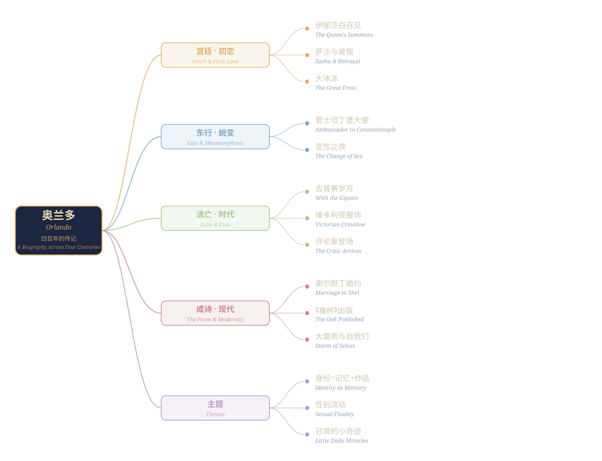

奥兰多
〇 · 书籍信息
基本信息
| 书名 | 《奥兰多》（Orlando: A Biography）——副题「一部传记」是吴尔夫的恶作剧：用传记的体例写一个活过四百年、还能换性别的人 |
|---|---|
| 作者 | 弗吉尼亚·吴尔夫（1882–1941），现代主义核心作家。本书写给挚友维塔·萨克维尔-威斯特，被她自称为「写作者的假日」与「一个大玩笑」——却是她最好读、最快乐的一本书 |
| 出版 | 1928 年出版，分六章，从伊丽莎白时代（约 1588）写到出版当日（1928）——同一个人跨越四个世纪 |
| 体裁 | 「传记体」奇幻小说（mock biography）：年表、脚注、评论家致辞一应俱全，全是戏仿；同时是对「身份由什么决定」的思想实验 |
| 一句话 | 一个十六岁的少年贵族活到三十六岁变成女性，再活三百年写完一首长诗——性别在换、时代在换，而那个「我」始终在场：身份不是身体，是记忆与写作。 |
一 · 核心主题总览
六章的时间线里埋着四组概念：① 时间与自我（全书引擎）
常人在时间里老去，奥兰多却把时间「挂」在年龄之外：三十岁换了性别，三百岁还是三十六岁的脸。吴尔夫由此提出全书最锋利的问题：如果记忆连续而外貌改变，我们凭什么认定「同一个人」？年龄、性别、身份，可能都只是传记体的习惯。
② 性别的流动性
第三章在君士坦丁堡的变性不是猎奇，是思想实验的一半：换了身体，爱好、记忆、脾气不变——改变的只有社会对待这个人的方式。吴尔夫的判词：两性本就相互渗透，每个人身上都有摇摆——这句话在 1928 年说出，放在今天依然超前。
③ 服饰与身份
换装段是全书最有趣的讽刺：奥兰多穿上裙装后，「法律换了、礼数换了、连思考的语法都换了」——衣服改变的不是身体，是世界看你、你看世界的角度。身份一半是给自己写的，一半是社会给套上的。
④ 写作与自由
奥兰多的四百年只有一件事做不完：写那首长诗《橡树》。它被烧、被藏、被改、被嘲笑，三百年后才出版——作品比人生慢，但比人生长。终章「大 revelation 从未到来，来的是日常的小奇迹」，是吴尔夫给创作与生活共同的注脚。
二 · 第一段 宫廷与大冰冻—— 伊丽莎白 · 萨沙 · 泰晤士冰封 ——
少年贵族与萨沙
开篇第一句就是全书的名句：奥兰多是少年贵族，在自家大宅的鹿角下写作《橡树》。伊丽莎白女王看中他，召他入宫；他在宫廷里邂逅俄国使团的公主萨沙，坠入一场刺骨的初恋。萨沙许诺同赴东方，却在约定之夜随船离开——初恋以背叛收场。吴尔夫写宫廷写情书写幻灭，笔调轻盈，讽刺藏在礼节与服饰的细节里：宫廷是一个用刺绣决定道德的地方。
◆ 语言学习 · 宫廷 · 初恋
| disguise /dɪsˈɡaɪz/ | v./n. 伪装，掩饰 —— 例句：the fashion of the time did something to disguise it（开篇名句）。disguise oneself as「装扮成」；与 hide 辨析：disguise 强调「改变外观」 |
|---|---|
| melancholy /ˈmelənkəli/ | n./adj. 忧郁 —— 例句：a fit of melancholy（宫廷段）。文艺复兴气质词，名词形容气质、形容词形容心情 |
| pageant /ˈpædʒənt/ | n. 盛装庆典，浮华场面 —— 例句：the pageant of court life（宫廷段）。历史游行盛会；引申义「浮华的演出」 |
| reckoning /ˈrekənɪŋ/ | n. 清算，计算 —— 例句：the day of reckoning（分手段）。reckon（计算/认为）的名词；pay the reckoning 结账（古义） |
句型 ｜ 「He—for there could be no doubt of his sex, though the fashion of the time did something to disguise it—was in the act of slicing at the head of a Moor…」——主语 He 与谓语 was 之间隔着两层破折号插入语：先解决性别问题，再讲动作。插入语的「闲笔感」正是传记体的幽默来源；学写人物，把最关键的信息放进最随意的位置。
大冰冻与《橡树》的劫难
詹姆斯一世时代的伦敦迎来著名的大冰冻：泰晤士河整个冻结，河上开了冰上集市。奥兰多在冰上再遇萨沙，又一次被抛弃，大病一场后陷入昏睡（七天七夜无人能唤醒）。醒来时，《橡树》诗稿被大风吹散，宫廷政变般的权力更替又把他边缘化——爱情与作品同时被夺走，这是全书最冷的一个冬天。吴尔夫对大冰冻的描写是英文散文的名段：河流冻结成街市，人与物在冰上交换位置。
◆ 语言学习 · 大冰冻
| frost /frɒst/ | n. 严寒，霜冻 —— 例句：the Great Frost（第二章专名化）。frosty 形容词；与 freeze/ice 词族联记 |
|---|---|
| slumber /ˈslʌmbə/ | n. 沉睡 —— 例句：a slumber of seven days（昏睡段）。文学词汇，与 sleep 辨析：slumber 更深、更古雅 |
| scatter /ˈskætə/ | v. 吹散，散落 —— 例句：the poem scattered（诗稿散佚）。scatter… to the four winds「散向四方」 |
| grievous /ˈɡriːvəs/ | adj. 沉痛的，严重的 —— 例句：a grievous loss（失诗段）。grieve（哀悼）同族；grievous bodily harm 法律用语 |
习语 ｜ to the four winds 散向四面八方——纸稿被风吹散的标准表达；under the oak 在橡树下：奥兰多的诗以橡树为题，橡树同时是英国的民族意象（皇家海军的木料），一棵树背着国家叙事。意象选得越家常，承载的东西越重。
三 · 第二段 东行与蜕变—— 君士坦丁堡 · 性别的转身 ——
君士坦丁堡 · 变性之夜
奥兰多受封大使出使君士坦丁堡，功勋卓著却被任命为「终身任职」——受困于荣耀。一场瘟疫般的昏睡之后，他在三十六岁那夜醒来，换了性别：记忆、性情、才华分毫未变，改变的只有身体与世界的态度。三个性格鲜明的gnome式人物（贞洁、节制、朴素）围着他/她宣读「新性别条款」，被一一回绝。随后奥兰多与吉普赛人同行离开宫廷——「变性」在书中写得如此平静，正是吴尔夫的用意：身份的巨变，不需要戏剧化的痛苦来证明。
◆ 语言学习 · 蜕变
| ambassador /æmˈbæsədə/ | n. 大使 —— 例句：appointed ambassador（第三章）。embassy 大使馆；ambassadress 女大使（古） |
|---|---|
| plague /pleɪɡ/ | n. 瘟疫 —— 例句：a plague（变性前夜）。the plague 特指鼠疫；a plague on…「遭天谴吧」是戏剧腔诅咒 |
| vigilance /ˈvɪdʒɪləns/ | n. 警觉 —— 例句：sleepless vigilance（三章守夜段）。vigil 守夜/守灵同族；保持警觉 keep vigil |
| plight /plaɪt/ | n. 困境 —— 例句：the plight of…（转变后的处境）。plight one's troth「许下婚约」（古）一词两义 |
句型 ｜ 「Different though the sexes are, they intermix. In every human being a vacillation from one sex to the other takes place…」——Different though… are 是「表语前置让步」句式（= Though the sexes are different）。让步在前、结论在后、再给一句普遍化重申——议论段落的三步骨架，议论文直接套用。
四 · 第三段 流亡与归返—— 吉普赛人 · 十八世纪 · 服饰 ——
吉普赛岁月与时代更迭
与吉普赛人同行时，奥兰多发现「文明」的许多东西（财产、头衔、礼法）在他们那里毫无意义，一度如释重负；但「诗歌」这种东西吉普赛人不认，她终究还是要回英国。此后她轮流活在十八世纪：先当风度翩翩的沙龙客，再被时代风尚改造——到维多利亚时代，一件鲸骨裙就把她整个人「改造」完毕。服饰的段落是全书最锋利的讽刺：衣服决定姿态，姿态决定性格，性格决定命运。他遇见清教徒作家尼古拉斯·格林，第一次被「评论家」盯上——被误解的滋味从此进入写作生涯。
◆ 语言学习 · 服饰与时代
| attire /əˈtaɪə/ | n./v. 服装，穿戴 —— 例句：the attire of the age（服饰段）。正式词汇；be attired in「穿着」 |
|---|---|
| frock /frɒk/ | n. 连衣裙（旧式）—— 例句：the frock（维多利亚段）。frock coat 男礼服大衣；女裙与男礼服同一词族，本身就是性别史 |
| vagabond /ˈvæɡəbɒnd/ | n. 流浪者 —— 例句：the gipsy vagabonds（流亡段）。vagabond life 流浪生涯；与 nomad 辨析：nomad 偏族群游牧 |
| crinoline /ˈkrɪnəlɪn/ | n. 鲸骨裙撑 —— 例句：the crinoline（维多利亚段）。历史服饰专名——吴尔夫用它写「时代如何塑造身体」 |
句型 ｜ 「Vain trifles as they seem, clothes… change our view of the world and the world's view of us.」——Vain trifles as they seem 是「名词 + as + 主谓」的让步倒装（尽管看似虚饰）。「X as they seem」句式专用来给「被轻视之物」翻案：Trivial as it seems, a daily list changes how your day feels.
五 · 第四段 成诗与现代—— 婚约 · 长诗 · 大雷雨 ——
谢尔默丁与《橡树》出版
维多利亚时代，奥兰多被时代逼着「必须结婚」，最终与航海家谢尔默丁缔结一段彼此尊重的婚姻（她主动求婚，他坦然接受）。长子出生后，那首写了三百年的《橡树》终于付印——时代大奖（勃特勒奖章）随之而来。终章来到 1928 年 10 月 11 日 motor car 的时代：奥兰多三十六岁，开着车，带着现有的全部记忆回到大宅；夜里一场大雷雨，她与「自我们」逐一对坐——所有过去的人格同时在场。大 revelation 从未到来，到来的是日常的小奇迹；天光亮起，她看见自己的丈夫、女儿、以及屋外的野鹅——书在「平常日子」里收束。
◆ 语言学习 · 现代
| shelve /ʃelv/ | v. 搁置 —— 例句：the poem shelved for centuries（出版段）。过去分词 shelved「被搁置的」；on the shelf「闲置」 |
|---|---|
| coupe /ˈkuːpeɪ/ | n. 双座小汽车 —— 例句：her motor coupe（终章）。20 年代新词进入文学——新物件是新时代的入口 |
| thunderstorm /ˈθʌndəstɔːm/ | n. 大雷雨 —— 例句：the thunderstorm（终章）。storm 词族：rainstorm/snowstorm/thunderclap |
| knell /nel/ | n. 丧钟 —— 例句：the knell of the old self（雷雨段）。响钟 knell the end；与 bell 辨析：knell 专指宣告终结的钟声 |
习语 ｜ a great revelation never came——终章名句的骨架。「启示从不以巨响到来，到来的是小事」：little daily miracles, matches, unexpectedly illuminating（日常的小奇迹、火柴般的亮光）。英文写「顿悟」的最高级写法是反高潮：把大词（revelation）留给否定句。
六 · 人物图鉴与成长弧线—— 主角配角 · 一张表看穿 ——
主要人物
奥兰多 Orlando——主角与叙述中心：四百年不变的「我」。弧线：少年诗人 → 宫廷宠儿 → 心碎者 → 大使 → 女性 → 流亡者 → 母亲 → 现代车主。他/她的唯一连续性是记忆与那首诗——身份是一篇写了四百年还没写完的稿子。
萨沙 Sasha——俄国公主，初恋与第一次背叛。她的反复无常写成一种「冰的魔力」——越是不确定的人，越令人奔赴。
谢尔默丁 Marmaduke Bonthrop Shelmerdine——「谢尔」航海家，全书最健康的爱情：彼此不占有、以风与海为共同语言。婚姻在书中被写成「两个自由者的结伴」，在 1928 年相当激进。
尼古拉斯·格林 Nicholas Greene——清教徒评论家：第一次把「写作与评论的战争」带进奥兰多的世界——被误读，是创作者的成年礼。
哈丽特/她自己 Harriet——维多利亚时代给奥兰多「配」的人格：写葬礼诗、守规矩——她最终发现这些「自己」都是时代的制服。人格是可以退租的。
次要人物（功能位）
| 伊丽莎白女王 | 初代赞助人：给名分也给枷锁——宫廷庇护从来双向收费 |
|---|---|
| 贞洁 / 节制 / 朴素 | 三个 gnome 式拟人：性别「条款」的宣读者——被奥兰多一一回绝，讽刺拉满 |
| 吉普赛首领 | 文明价值的镜子：在他的世界观里，贵族的财产与诗歌一样可疑 |
| 维塔（原型） | 全书献辞与原型的双重在场：吴尔夫把挚友写成四百年的传奇——最好的情书是让对方活成史诗 |
七 · 主题与象征—— 每个道具都在说话 ——
| 橡树 ↔ 作品与英国 | 诗以橡树为题：家族庄园的老树、海军的木料、诗稿的名字——一棵树串起土地、民族与写作 |
|---|---|
| 大冰冻 ↔ 时代的冻结 | 泰晤士冻结成集市：历史有时冻住，生活照样热闹——时代给不了的东西，人可以在冰面上自己造 |
| 服饰 ↔ 身份条款 | 裙装与鲸骨裙：换衣即换礼法——身份的一半是布料 |
| 大雷雨 ↔ 自我清算 | 终章的雷雨里所有人格同堂：完整的自我不是单一版本，是全员到齐 |
| 野鹅 ↔ 自由的回归 | 结尾窗外的野鹅群：童年记忆的自由图腾——生活最后的裁决不在书房，在天空 |
| 长诗《橡树》 ↔ 时间 | 三百年写一首诗：作品以自己的速度生长，不服从人生的日历 |
八 · 写作手法赏析—— 怎么写，就能怎么学 ——
① 传记体的戏仿
章节按年代命名、附「评论家致辞」、装模作样的考据——吴尔夫用传记的一切严肃形式写最不严肃的内容。形式的正经与内容的狂放对撞，幽默由此而生；学幽默写作，从「假装严谨」开始。
② 时间的伸缩
四百年里有些年代一年写十页（宫廷），有些三百年一笔带过——叙事时间服从心理时间：重要的年代慢慢过，无聊的年代飞快跳。写作排期同理。
③ 轻松的深度
这是吴尔夫最快乐的书，但性别论、身份论藏在狂欢里。想法越严肃，越要写得轻盈——苦大仇深是思想传播的天敌。
④ 对话与「自我们」
终章的雷雨对话是她处理「多自我」的舞台化方案：让每个时期的人格开口说话。内心的不同声音，可以写成一场圆桌会议。
九 · 名段欣赏—— 原文精读 · 逐段赏析 ——
十 · 金句摘录—— 10 条 · 中英对照 · 带出处 ——
"He—for there could be no doubt of his sex, though the fashion of the time did something to disguise it—was in the act of slicing at the head of a Moor."他——性别毫无疑问，尽管当时的服饰做了些遮掩——正挥剑砍向一个摩尔人的头颅。—— 第一章 · 开篇
"Different though the sexes are, they intermix."两性虽有别，却相互渗透。—— 第三章
"In every human being a vacillation from one sex to the other takes place."每个人身上，都发生着从一种性别到另一种性别的摇摆。—— 第三章
"Vain trifles as they seem, clothes change our view of the world and the world's view of us."衣物看似虚饰，却改变我们看世界的方式，也改变世界看我们的方式。—— 第五章
"She had a great variety of selves to call upon."她有远比常人更多的自我可供调遣。—— 第五章
"Nothing thicker than a knife's blade separates happiness from melancholy."幸福与忧郁之间，只隔一道比刀刃还薄的界线。—— 第二章 · 大冰冻
"一个字也榨不出来……笔伸进墨水瓶，鬼使神差地在空无一字的白纸上写下：奥兰多——一部传记。"—— 译者序 · 转引吴尔夫书信
"吴尔夫称之为「写作者的假日」和「一个大玩笑」。"—— 译者序
"The great revelation perhaps never did come."那伟大的启示，也许从未到来。—— 终章
"Instead there were little daily miracles, matches, unexpectedly illuminating."来的是日常的小奇迹——像火柴，在黑暗中意外地亮起。—— 终章
十一 · 拓展阅读—— 原文 · 词条 · 译文 ——
作者与文本
- Orlando: A Biography · 英文维基百科 —— 出版史、维塔原型与评论脉络
- Virginia Woolf · 英文维基百科 —— 生平与作品谱系
- 《奥兰多》· 中文维基百科 —— 中文译名与版本
背景与人物
- Vita Sackville-West · 英文维基百科 —— 「被写成史诗」的那位挚友
- Knole House · 英文维基百科 —— 维塔被剥夺的祖宅——小说的隐痛背景
延伸阅读
- A Room of One's Own · 英文维基百科 —— 同年的性别论散文，与本书互为表里
- 豆瓣 · 各中译本检索 —— 对照不同译本
十二 · 个人感悟与心得—— 三点心得 ——
读《奥兰多》：三点心得
其一，身份是一篇写不完的稿子。奥兰多四百年的连续性不靠性别、不靠时代、不靠身体，靠记忆与那首《橡树》。给自己画身份时同理：职务、标签、平台都会换，能带走的只有记忆与作品。可落地的动作：把「我是谁」的答案从「职位」改写成「我持续在做的事」——前者会被剥夺，后者不会。
其二，别让服饰决定性格。书中最锋利的讽刺是：一件鲸骨裙就能改写一个人的走姿与脾气。今天的世界没有鲸骨裙，但有同样功能的「行业套话」「身份表情包」——穿上什么话术，就会慢慢长成什么人。自查动作：定期检查自己常说的三个口头禅，问一句——这是我要说的，还是我身上这件「衣服」替我说的？
其三，等小火柴，不等大启示。终章的判词值得贴在墙上：大 revelation 不会来，来的是黑暗里意外亮起的小奇迹。学习与创作同理：转折从来不是一次事件，是一串小亮光的累积。可落地：把「等想通了再开始」改成「先划一根火柴」——今天写两行、读两页，亮光出现之前先动手。
一句话收束：这本书用四百年证明一件事——人是自己记忆的作者，也是自己身份的作者。先写下第一行，剩下的时间会来续稿。
十三 · 一页速查（复习用）
| 全书框架 | 六章四百年：伊丽莎白宫廷 → 大冰冻 → 君士坦丁堡变性 → 吉普赛流亡 → 维多利亚婚约 → 1928 现代 |
|---|---|
| 奥兰多弧线 | 少年诗人 → 宫廷宠儿 → 心碎者 → 女大使 → 流亡者 → 母亲与作家 |
| 关键道具 | 橡树诗稿 / 大冰冻 / 三位拟人条款宣读者 / 鲸骨裙 / 大雷雨 / 野鹅 |
| 性别论要点 | 两性相互渗透 / 摇摆常态 / 服饰维持表象——1928 年的思想实验 |
| 爱情观 | 萨沙（占有式初恋·背叛）↔ 谢尔默丁（自由式婚姻·以风海为语） |
| 词汇 TOP12 | disguise 伪装 / pageant 浮华 / frost 霜冻 / slumber 沉睡 / grievous 沉痛 / ambassador 大使 / vigilance 警觉 / attire 服装 / vagabond 流浪者 / crinoline 裙撑 / knell 丧钟 / revelation 启示 |
| 形式要点 | 传记体戏仿（年表·致辞·考据）/ 叙事时间伸缩 / 反高潮结尾 |
| 对照阅读 | 《一间自己的房间》（同年散文）· 《达洛维太太》（严肃版吴尔夫） |
十四 · 全书思维导图—— 一图纵览 ——

一图纵览全书骨架 · 中英双语对照 · 手机端可左右滑动查看全图